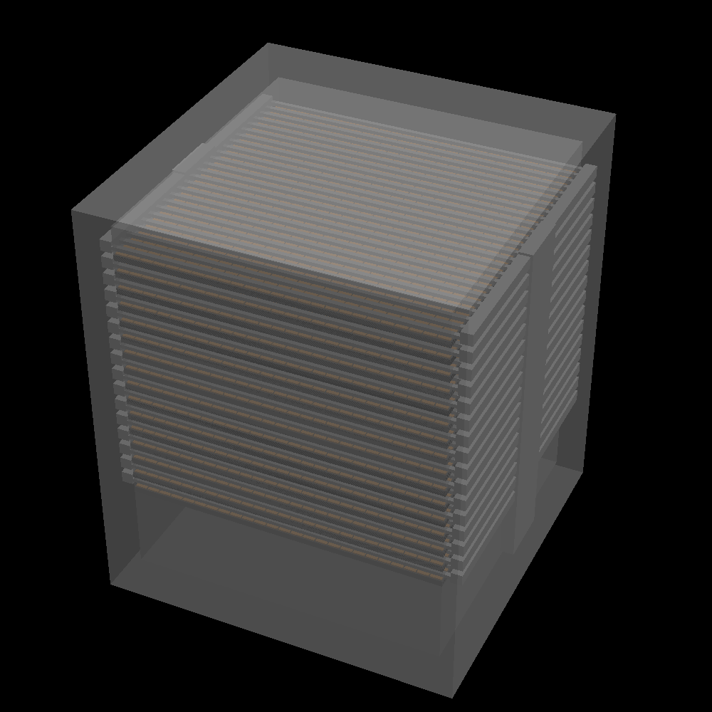
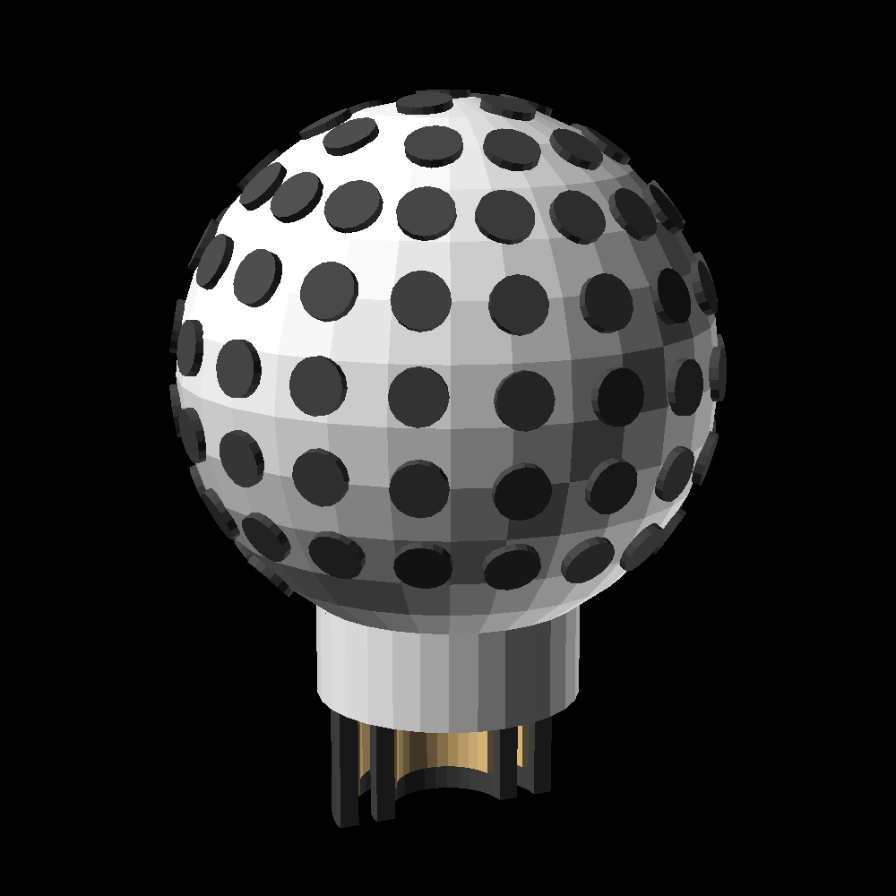

link to this page
Felicity Techtree: Compute infrastructure
 Compute infrastructure provided by the Felicity Tech Tree relies extensively on Civic-2 chips and Homomorphic Encryption.
Compute infrastructure provided by the Felicity Tech Tree relies extensively on Civic-2 chips and Homomorphic Encryption.
The core idea is to build banks of civic chips packaged together with Homomorphic Encryption software, allowing any authorized parties to delegate computation to these banks without having to reveal to them any of the actual data which is being computed.
The actual programs (AI agents, human mind uploads, other specific cases) run on fairly small and computationally weak central units, which delegate much of their bulk computation needs to the compute nodes.
Everything is tied together into a compute grid that pools together computing power and delegates it as needed.
Compute grid node

A standard design of a compute node is provided, which can hold up to 10 000 civic chips.
Physically it appears as just a box 370mm by 315mm by 315mm in size.
At peak usage it consumes about 100 kilowatts of electrical power (which is just under 174 amps at the 576V grid voltage used in FTT).
The node is meant to be water cooled with a flow rate of at least 1L/s, as that will raise the water temperature by just under 24 kelvin between the intake and the exhaust of the internal cooling loop.
Since civic chips are largely interchangable, any model could be used, but for FTT the usual is the civic-2 chip.
In standard configuration with civic-2 chips, one full compute node provides 5E+20 bit/s fliprate and 1E+19 bits of memory.
For Felicity herself to run at realtime speed there need to be at least 158 800 such nodes on the grid, and at least 47 of them are needed to have enough memory to fully load her in at all (underclocked by a factor of 3435).
For a UEIA model to operate in realtime speed at least 7 nodes are needed, and if processing speed is not a constraint, then a single node can support about 552 UEIA instances.
The computing power of the node is made available to external devices through standard compute sharing software with support for homomorphic encryption, practically turning it into a massive coprocessor that any device can connect to and use as needed as if it were a component that just got slotted in.
Homomorphic encryption ensures that the node does not actually know what data is being processed through it other than some vague details about its structure and amount - this helps mitigate potential security breaches since there are vastly many more compute nodes on the grid than actual program nodes.
The particular implementation of Homomorphic Encryption used in FTT causes most operations to require around 10× the memory and fliprate compared to being performed without encryption.
Infrared networking allows the nodes to communicate at a stable 1Tbit/s over short ranges with only a line of sight, meanwhile fiber-optic ports allow up to 400Tbit/s per port.
Program node
This is a piece of equipment that actually runs programs and stores data in unencrypted form.
UEIA instances, felicity herself, and other programs are ran on these nodes, which act as central points that ensure a secure environment for the programs running within.
The level of security is extreme - among other safety features, integrity sensors will detect attempts at physically tampering with a program node, and it will completely wipe all of its data long before a reasonably equipped attacker can gain direct access to the internal components.
Unlike the bulk computation hardware of the compute grid, program nodes are specialized and full of security-hardened hardware designed to make it as difficult as possible to extract data from within without explicit permission of the program node's system.
Program nodes don't themselves have much computing power and as such have to delegate bulk computation to a compute grid, but this is only ever done through a layer of homomorphic encryption that makes it so the shared data and requested operations to run on that data appear like meaningless noise, which only becomes useable after it is decrypted back in the program node.
They are hypothetically compatible with any compute grid using the common compute sharing software, but FTT broadly discourages use of externally sourced computing equipment.
Much like the compute grid nodes, infrared networking allows the program nodes to communicate at a stable 1Tbit/s over short ranges with only a line of sight, meanwhile fiber-optic ports allow up to 400Tbit/s per port.
Network node

These are small devices whose only purpose is to enable connectivity between other devices.
Physically they appear to be just spheres about 10cm in diameter, covered in infrared emmiter/detectors, with a standard FTT power connector protruding on one side.
They are equipped with infrared laser diode arrays that can shine a narrow beam in nearly any direction, together with IR detectors to receive the light of other nodes, allowing 1Tbit/s of bandwidth.
High frequency radio communication allows the nodes to communicate at up to 23Gbit/s even when the line of sight is obscured, but this mode of communication is prone to interference so that bandwidth is divided between all nearby nodes rather than allowing each node to communicate at that rate.
When plugged into a power grid and configured to use it as a communication medium, they can inject faint high-frequency voltage oscilations into the cables to communicate through them at a rate of up to 1Gbit/s, but much like radio communication this bandwidth is shared between all nodes within each other's reach, and tends to be particularly unreliable as power cables generally aren't meant to be used for communication.
The network nodes can as a bonus act as lidar stations, since as a matter of fact the "infrared diode arrays" they are dotted with are simply repurposed solid state lidar modules.